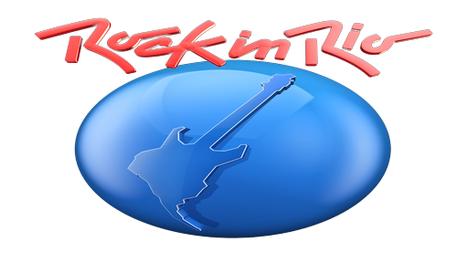

Um dos maiores festivais musicais do planeta.
O Rock in Rio 2022 é um evento com muita música promovido no Rio de Janeiro – RJ! Ele conta com diversas atrações musicais famosas do mundo inteiro e tem repercussão de nível mundial.
O evento ocorre a cada 2 anos e reúne milhares de pessoas para assistir suas atrações – nacionais e internacionais. Dentre os cantores mais famosos que compareceram aos palcos do Rock in Rio, é possível citar Queen, Guns n’ Roses, Iron Maiden, Red Hot Chilli Peppers e Foo Fighters.
A quem se destina o Rock in Rio 2022
O festival é destinado a todos aqueles que gostam de música e shows ao vivo! Reunindo muitas atrações musicais, é possível comparecer ao festival para assistir a um show de qualquer gênero musical.
Quando acontece o Rock in Rio 2022
O Rock in Rio 2022 acontecerá nos dias 2, 3, 4, 8, 9, 10 e 11 de setembro!
O horário de abertura dos portões é 2 horas da tarde.
Ingressos e Valores Rock in Rio 2022
Todos os ingressos do Rock in Rio 2022 estão esgotados. A organização anunciou nesta terça-feira (12) que não há mais entradas para nenhum dos sete dias do festival, uma semana após o início das vendas.
Os dias de Justin Bieber, Dua Lipa, Post Malone, Green Day, Coldplay e Guns N' Roses no Rock in Rio 2022 acabaram algumas horas após a abertura no último dia 5.
- O dia de Justin Bieber acabou em 12 minutos.
- O dia de Coldplay acabou em 27 minutos.
- O dia de Post Malone acabou em 59 minutos.
- O dia de Dua Lipa acabou em 1 hora e 4 minutos.
- O dia do Green Day acabou em 1 hora e 44 minutos.
- O dia do Guns N' Roses acabou em 4 horas e 45 minutos.
Programação Rock in Rio 2022
| 02 de setembro | 03 de setembro | 04 de setembro | 08 de setembro | 09 de setembro | 10 de setembro | 11 de setembro |
|---|---|---|---|---|---|---|
| Iron Maiden | Post Malone | Justin Bieber | Guns n Roses | Green Day | Coldplay | Dua Lipa |
| Dream Theater | Marshmello | Demi Lovato | Maneskin | Fall out Boy | Camila Cabello | Megan Thee Stallion |
| Sepultura | Jason Derulo | Migos | The Offspring | Billy Idol | Bastille | Rita Ora |
| ---- | Alok | CPM22 | Capital Inicial | Djavan | Iza | Ivete Sangalo |
Local do Rock in Rio 2022
O evento ocorrerá no Parque Olímpico no oeste da cidade do Rio de Janeiro! Localizado na Barra da Tijuca – um bairro próximo ao literal que é muito famoso pelas praias. A capacidade do local do evento chega a mais de 100 mil pessoas.
Imagens
.jpg)
Entre em contato com a Rock In Rio 2022
Os canais de comunicação do evento, são:
Site oficial: https://rockinrio.com/rio/pt-br/home/
Instagram: https://www.instagram.com/rockinrio/